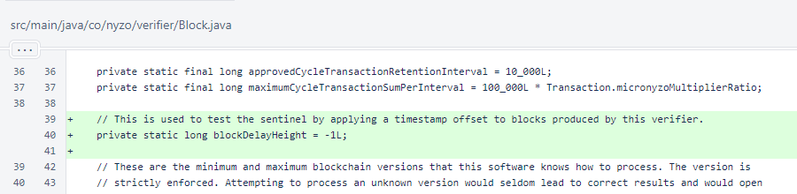
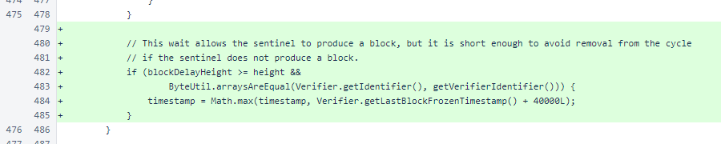
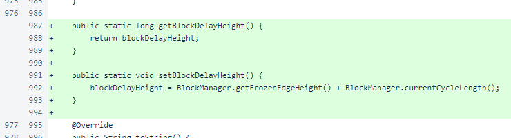
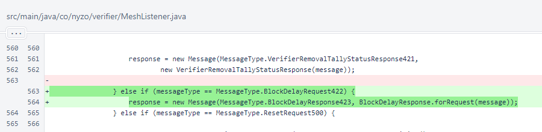
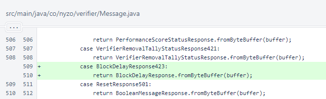
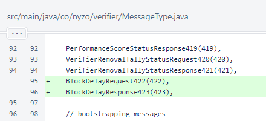
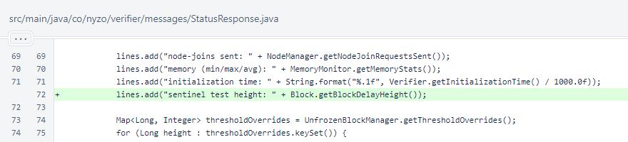
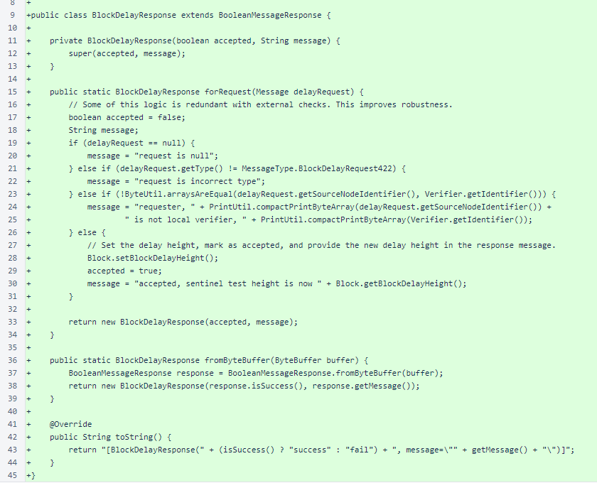
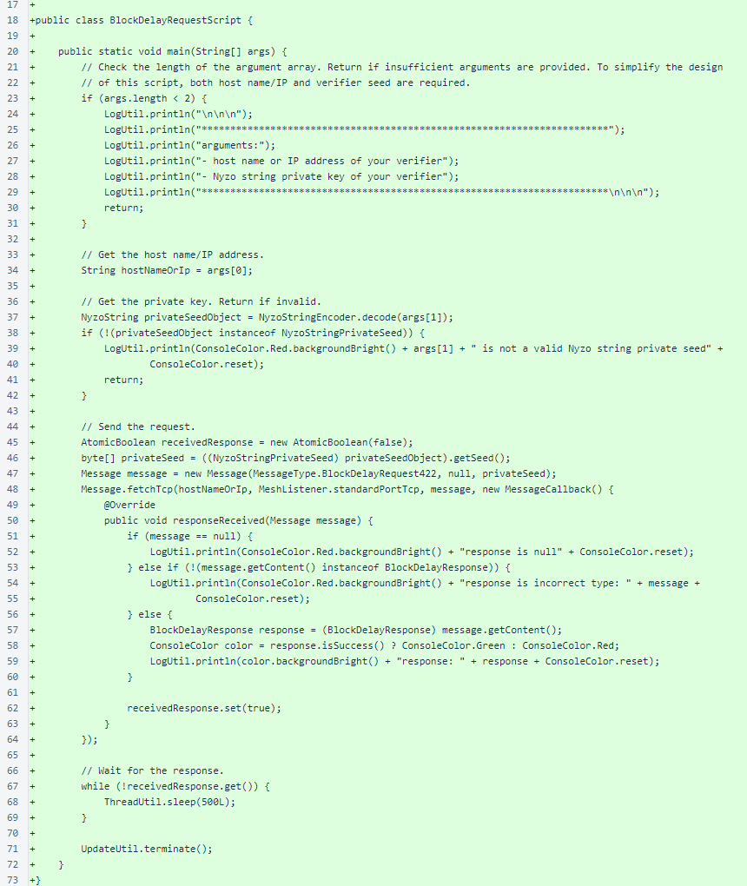
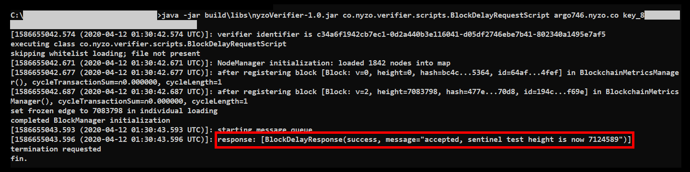

Nyzo version 577 (commit on GitHub) adds an option to delay block production. This allows for safe testing of sentinel protection.
The version affects the verifier only.
Recent losses of cycle verifiers are likely due to sentinel failures. To help avoid such losses in the future, this version adds a safe method for testing sentinel block production. This will allow operators of verifiers to confirm that their sentinels are working properly and will provide an opportunity to correct any sentinel issues before outages arise that place verifiers in jeopardy.
In Block, the blockDelayHeight field was added to implement the delay option. By default, this field has a value of -1, which is inactive for all block heights.
In Block.getMinimumVoteTimestamp(), a 40-second offset is applied to blocks produced by this verifier when the delay option is active. This is long enough to allow a sentinel to provide coverage, and it is short enough to avoid any risk if the sentinel fails to provide coverage.
An accessor and mutator are provided for blockDelayHeight. The accessor is used by StatusResponse, and the mutator does not take an argument. Instead, it sets the height one cycle past the current frozen edge. This will cause exactly one scheduled block by this verifier to be delayed.
In MeshListener.response(), a BlockDelayResponse423 is produced in response to BlockDelayRequest422.
In Message.processContent(), processing of BlockDelayResponse for MessageType.BlockDelayResponse423 was added.
Values BlockDelayRequest422 and BlockDelayResponse423 were added to the MessageType enumeration.
The block-delay height, labeled as "sentinel test height," was added to the private section of the StatusResponse.
BlockDelayResponse is implemented as a subclass of BooleanMessageResponse to eliminate the tedium of serialization and deserialization.
If the delay request is accepted, Block.setBlockDelayHeight() is called, activating the timing delay for the next cycle.
The BlockDelayRequestScript sends a message to a verifier to activate the delay. The script requires two arguments, the IP address (or host name) and the private key.
The following screenshot shows the script running on a Windows 10 system, activating the delay on Argo 746.
An earlier activation of this delay caused a sentinel to cover for Argo 746, which resulted in sentinel block 7119595 being incorporated into the blockchain.